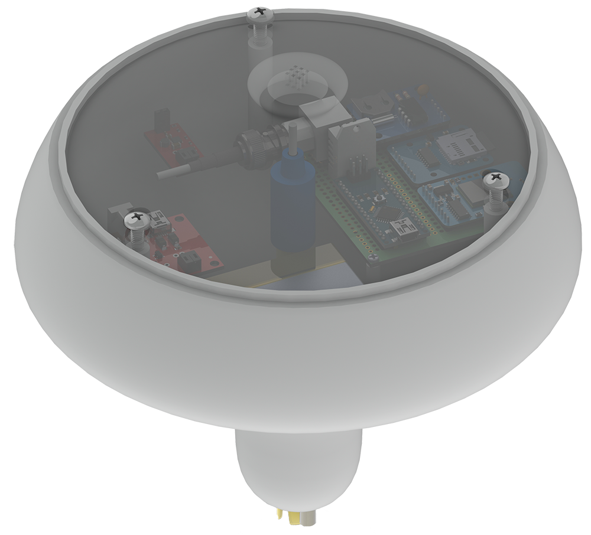
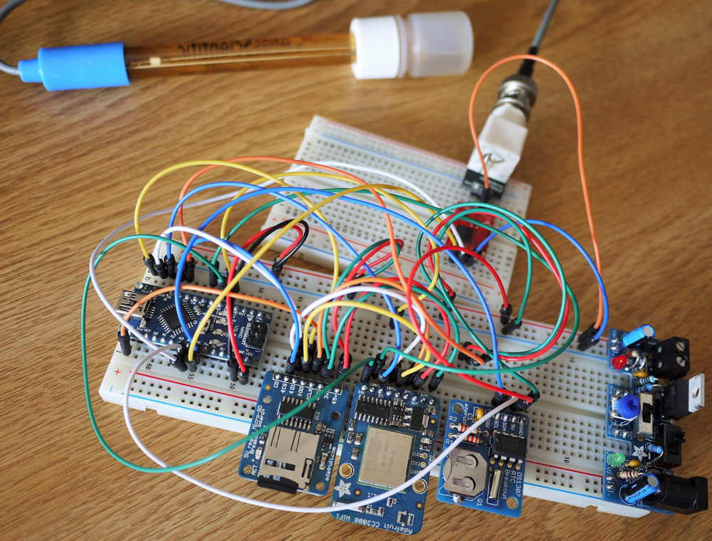
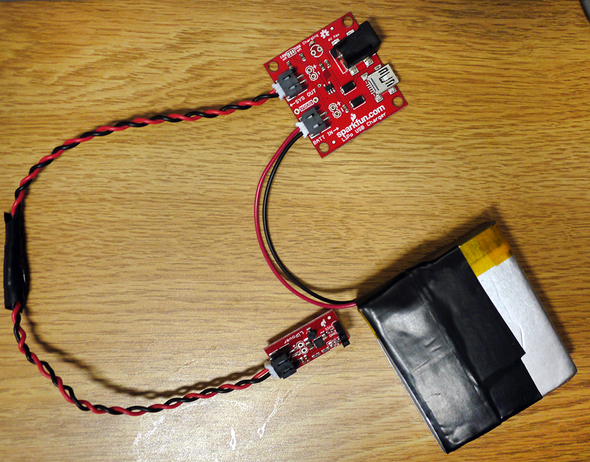
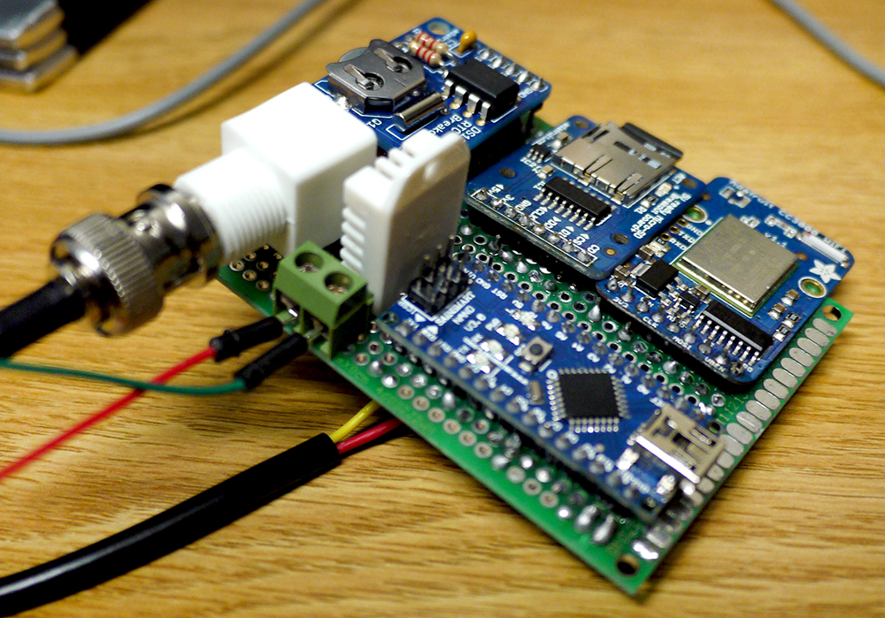
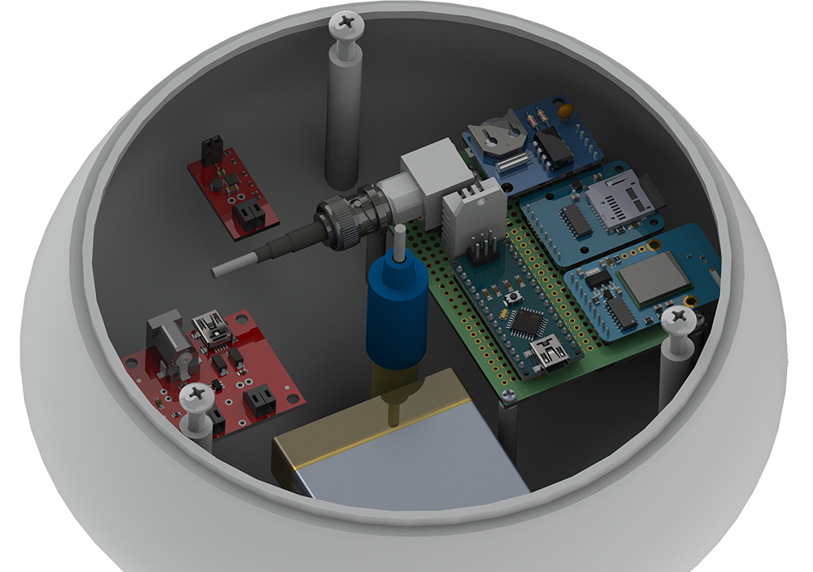
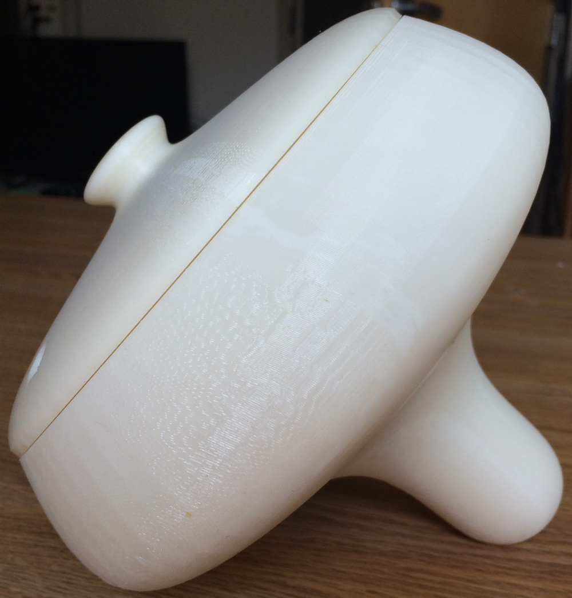

This water quality probe was mine, and three others, senior project in computer engineering that we worked on during our final year at Elizabethtown College. We meant to produce the probe as simply as possible, more as a proof of concept, instead of proving how small or cheapily the device could be made. Most of the electronics were off-the-shelf parts from Adafruit and Sparkfun, all contained in a 3D-printed casing we designed.
 This render was made by me using SolidWorks to prove that all of the components would fit inside the casing. This was important as both pieces took a combined 14 hours to print on the engineering department’s new 3D printer.

But before all of that we had do acquire, test, and program our components.
- Arduino Nano
- Micro SD breakout (Adafruit)
- CC3000 WiFi breakout (Adafruit)
- DS1307 Real Time Clock breakout (Adafruit)
- DHT22 Air Temperature and Humidity
- pH Sensor Kit (Atlas Scientific)
- Dallas One-Wire Waterproof Temperature Sensor

Our power system thanks to a massive LiPo battery and some efficient code could power the system for almost a full month non stop while taking readings every 15 minutes.
- 6000mAh 3.7V Lithium Polymer Battery (Sparkfun)
- USB Charger with passthrough (Sparkfun)
- 3.3V -> 5V Voltage Booster/Regulator

After testing, it took some creative soldering to fit all of the components onto a 6cm X 8cm prototype PCB.

Full render of the insides with the lid removed. Yeah… I spent way to much time on that…

Casing moments after its printing was completed. Afterwards it was lightly sanded and then sealed with several coats of acrylic sealer for water proofing. The sensors in the bottom and the lid we water sealed with silicone.